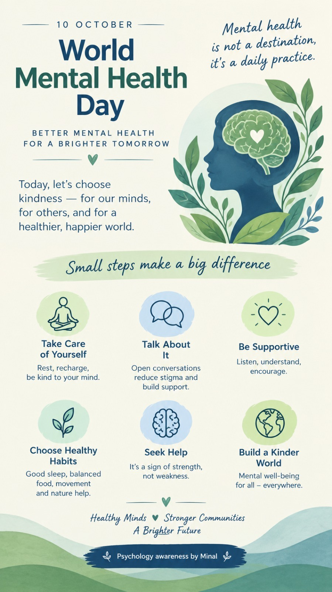

Start with a short message
Use the contact page to share basic contact details and the broad reason for getting in touch. You do not need to send a detailed personal or clinical history.
Not everyone is ready to contact a professional immediately. This space is designed for clear, practical mental-health education that can help people understand themselves and know when additional support may be useful.
Minal’s original illustrated flyer on everyday mental well-being, conversation and community care.
From a brief initial message to practical details about fit, privacy and next steps.
Some everyday signs that it may be useful to seek psychological support, even if life does not feel like a crisis.
What a first conversation can look like and why uncertainty is a perfectly valid place to begin.
Questions that can help you notice when pressure is becoming a longer-term pattern rather than a temporary busy period.
A reminder that small, supportive steps can make a meaningful difference. Explore the original flyer created by Minal.

The poster offers gentle reminders to care for yourself, talk openly, support others, practice healthy habits and ask for help when needed.
The flyer is an educational awareness resource, not personalised mental-health advice.
A clear starting point helps make contacting a psychology professional less uncertain. Session arrangements and professional boundaries are discussed individually, rather than assumed on the website.
Use the contact page to share basic contact details and the broad reason for getting in touch. You do not need to send a detailed personal or clinical history.
You can ask about the type of support offered, relevant qualifications, suitability, available format, fees and next steps. These details are confirmed directly, not guaranteed by the website.
Before sharing sensitive information, ask how personal information is handled, which confidentiality commitments and legal exceptions apply, and whether any third-party booking or communication platform is used.
Where an enquiry is outside the professional's scope or a different level of care is appropriate, a qualified provider or relevant service may be suggested. An initial enquiry does not guarantee an appointment.
This is a general outline for visitors, not a published practice policy. Exact procedures, confidentiality terms and referral arrangements must be confirmed by Minal before a formal consultation.
You may consider reaching out when worry, stress, low mood, anger, conflict, self-doubt, a transition or another concern is repeatedly affecting your sleep, concentration, relationships, work, studies or sense of well-being. You do not need to wait until things become unmanageable.
Psychological support can also be useful when nothing is “wrong” in a dramatic sense, but you want to understand a pattern, make a decision or build healthier ways of coping.
A first conversation can begin with whatever feels easiest to explain: what changed, what has been hardest lately, what you have already tried, or simply what you hope could feel different. The goal is not to perform or present a perfect history.
Consider whether work pressure is regularly following you into evenings or weekends, changing your sleep or mood, making it difficult to recover between workdays, increasing irritability or affecting relationships. One sign alone does not define burnout, but patterns over time are worth noticing.
Educational note: These resources are general information only. They are not a diagnosis, treatment plan or substitute for individualized professional care.
If something here feels familiar, you can choose to reach out when you are ready.